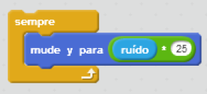
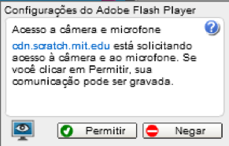
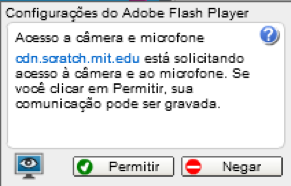
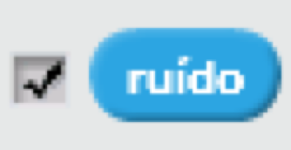

Interagir com um microfone
Você tem um microfone? Você pode usar 

Fazer barulho para que seu ator salte! Para um maior efeito, multiplique por um número:

Se você vir este pop-up, clique em Permitir para ter acesso ao microfone:


Clique na caixa de seleção para ver o volume:

O monitor será exibido no Palco:  .
.